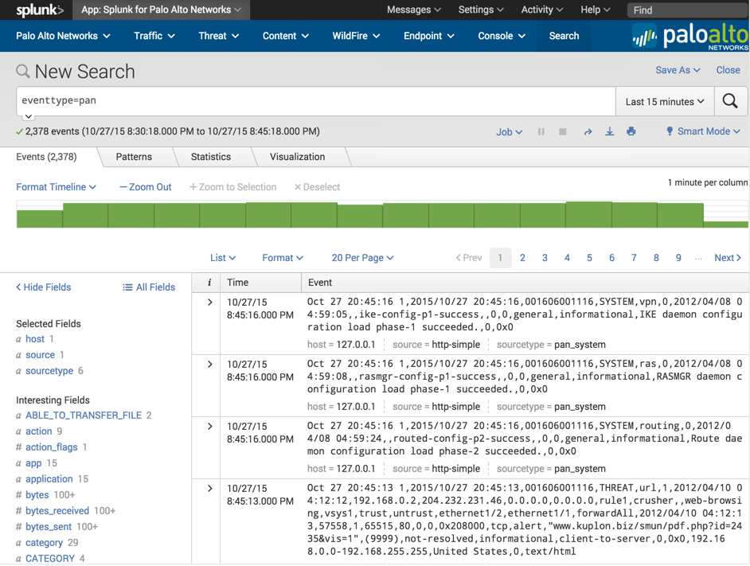
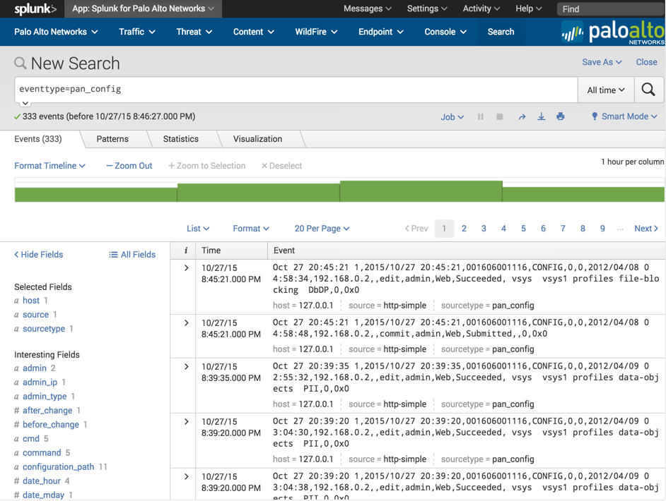
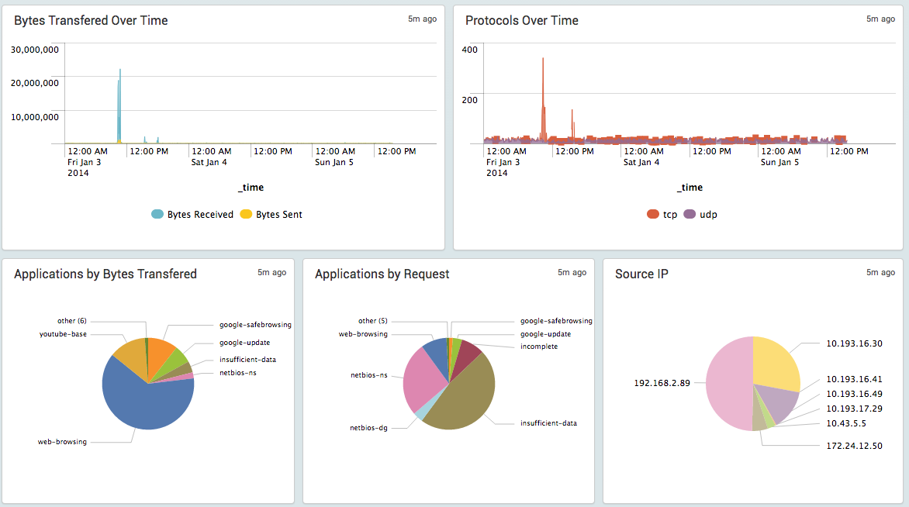

Troubleshooting
Common Problems and Solutions
Problem after upgrading the App/Add-on
Check the Release Notes for actions needed during App/Add-on upgrade and ensure you completed all required actions for upgrade.
When upgrading any app in Splunk, configuration created by the Splunk administrator is leftover in the app's local directory. If the file in the local directory in the app is not compatible with the new version, then unexpected problems can happen. This is true for all apps in Splunk and a best practice is to backup and delete the local directory in the app after upgrading it if there are problems after the upgrade. Note that you might need to leave inputs.conf if that is how your logs are getting into Splunk.
Dashboards not working
All dashboards have no data
Perform a search for eventtype=pan with 'All time' as the timeframe. If logs show up, then verify the timestamp of the logs is correct. If it is wrong, check that the clock and timezone on the Firewall/Panorama matches the Splunk server, or use NTP on both. See Time and Timezone Problems below for more detail.
Only 'Overview' or 'Real-time Event Feed' dashboard has data
The 'Overview' dashboard has data, but other dashboards do not, usually datamodel acceleration is disabled or the datamodel is not fully built. This can happen on a Splunk server with not enough resources to summary index the data as it comes in. Increase the time range on the dashbaords with no data to 'All Time' to see if data shows up. Check the datamodel to see if it is 100% built. See Troubleshooting Step 4 below for more detail.
'Overview' or 'Real-time Event Feed' dashboard has no data
The 'Overview' dashboards has no data, but other dashboards work correctly, the clock on your firewall is a few minutes off, or the timezone is set wrong. The 'Overview' dashboard is a real-time 5 minute search, while the other dashboards pull a larger timeframe from the data model. So the 'Overview' is more suseptible to minor variations in system clock. Please verify the clock and timezone on Splunk and the Firewall/Panorama are set exactly the same.
Time and Timezone Problems
There are a few factors that determine the time and timezone of a log:
- The Splunk server's time and date
- The Splunk server timezone, or the Splunk container timezone when using Docker
- The date/time and timezone settings on Firewall, Panorama, or Traps ESM
- The per-log timezone setting in props.conf
By default, the App and Add-on do not interpret timezones or have any preconfigured timezone settings.
Firewall/Panorama and Traps always output logs without a timezone, so the timezone setting is honored, but not included with the log. For example, if your Firewall is set to 8:00:00 EST, then the time in the syslog will be 8:00:00 (without the EST timezone).
Splunk always interprets Palo Alto Networks logs as the timezone of the Splunk server (or container).
Therefor, if a Splunk server and Firewall have the same timezone, then the timestamp will be interpreted correctly by Splunk. If they have different timezones, then the interpreted time will be offset by the difference in the timezones. You can overcome this by creating a local/props.conf file that explicitly sets the timezone for the logs. For example, if Splunk is set to UTC and the Firewall is set to EST, then configure a local props.conf file to interpret the Firewall logs as EST, as they will incorrectly be interpreted as UTC by default.
An example timezone setting in props.conf might look like this:
[host::newyork-firewall-*]
TZ = US/Eastern
This example would cause logs from newyork-firewall-1, newyork-firewall-2, etc. to be interpreted as US/Eastern timezone.
Logs have only sourcetype of pan:log
You set the sourcetype to pan:log in your inputs.conf, however, Splunk parses the logs and changes the sourcetype to a more specific one, including pan:traffic, pan:threat, pan:system, pan:config, and others.
If your logs are not getting converted to these other sourcetypes and are instead remaining with the pan:log sourcetype, then there is a parsing issue with the logs. This can happen for several reason, so please check each of these reason until the problem is resolved. Note that sourcetype changes happen at index-time so only newly received logs will get parsed to a sourcetype.
- Use the correct log format. For Firewall or Panorama logs, use the default syslog format. For Traps logs use CEF format.
- For UDP logs, try adding
no_appending_timestamp = trueto yourinputs.conf. - Ensure the Palo Alto Networks Add-on is installed on all Indexers and Heavy Forwarders, and configure the
inputs.confon the node receiving the logs. - If you're using syslog-ng or another syslog collector with a Splunk Heavy or Universal Forwarder, then syslog-ng can add a prefix to the logs which interferes with parsing. Follow the directions at Syslog-ng and Universal Forwarder to configure syslog-ng to omit this prefix.
No WildFire Data
The WildFire dashboard is empty or no WildFire data is appearing in the index. For Splunk to take advantage of WildFire, you log WildFire events from the Firewall/Panorama first. Splunk will leverage the WildFire cloud API to pull reports and IOC's from the WildFire analysis only after it receives notification of the WildFire event from the Firewall/Panorama.
Some things to check to get WildFire data into Splunk:
- If upgrading to App 5.3 or higher from a version before 5.3, you must set the WildFire API key in the Add-on Setup Screen, even if you previously set it in the App. See the release notes for more information.
- Verify there are WildFire Submission logs in the Monitor tab on the Firewall/Panorama
- Verify WildFire logs are enabled in the Log Forwarding Profile on the Security policy rule which is generating WildFire events
- Verify WildFire events are received by Splunk with this search:
eventtype=pan_wildfire - If there are WildFire events (syslogs), verify there are also WildFire reports (XML) with this search:
eventtype=pan_wildfire_report - If there are WildFire events (syslogs) but not WildFire reports (XML), check the report gathering logs for errors in
$SPLUNK_HOME/var/log/splunk/python.log. - Check that you have configured the TA with the WildFire API Key, especially if upgrading from a pre-5.3 version of the App.
Datamodel Build Problems
If using App 6.0 or higher, use the Datamodel Audit dashboard to get visibility into the datamodels and what they are storing.
If the build percentage is stuck at less than 95%, the cause might be limited resources on the Splunk server being consumed by other apps. Try disabling unused apps, removing acceleration from other datamodels, or adding hardware resources. Splunk Enterprise Security uses an exceptional amount of compute resources which can starve the datamodels of other apps like the Palo Alto Networks App. If Enterprise Security is installed on the same server as the Palo Alto Networks App, try separating them to different servers so they don't compete for compute resources.
If you need help troubleshooting performance problems with datamodels, you can open a case with Splunk Support. Note that Splunk Support will not troubleshoot the Palo Alto Networks App, but they can tell you what is causing any performance problems that prevent your datamodels from accelerating fast enough to keep up with new data.
Troubleshooting Steps
Follow these troubleshooting steps if there are problems getting the dashboards to show data.
Step 1. Check that all initial configuration is complete
- Verify inputs.conf is set up per the instructions. inputs.conf must have the line
no_appending_timestamp = truefor UDP syslogs - Check for other inputs.conf outside the App or Add-on that might be using the same port
- Check the firewall is not using a Custom Log Format (must use the default log format)
- Check the Endpoint Security Manager is using CEF format
- Check the firewall is set to log something like system events, config events, traffic events, and so on.
- Check that the clocks and timezones on the firewall and Splunk server are the same. If they are different, logs will not show up correctly.
- If using a TCP or SSL port for syslogs, try UDP instead, then switch to TCP or SSL once UDP is working
Step 2. Verify logs are indexed
Use the method described in the Test the configuration section to produce some syslogs. Verify the logs are reaching the Splunk server by navigating to the Splunk for Palo Alto Networks app, click 'Search' in the navigation bar, then enter:
eventtype=pan

If no logs show up, then the logs are not getting indexed correctly. Use these steps to find the problem:
- Verify the configuration from Step 1 above.
- Switch the search timeframe to All Time. If logs show up, verify the timestamp is correct on the logs. If time is wrong, check that the Splunk server and firewall have the same time and timezone set. Use NTP if possible.
- Use tcpdump or Wireshark on the Splunk server to verify the logs are actually reaching it.
- Verify the App (and Add-on when using App v5.0 and higher) is installed on all searchheads, indexers, and heavy forwarders.
- If using App v3.x or 4.x, verify the pan_logs index exists.
Step 3. Verify logs are parsed correctly
Use the method described above in the Test the configuration section to produce some syslogs. Verify the logs are reaching the Splunk server by navigating to the Palo Alto Networks App, click 'Search' in the navigation bar, and enter the following search:
eventtype=pan_config

If logs showed in step 2, but no logs show up now, then the logs are not getting parsed correctly:
- Check that you are not using a Custom Log Format in the syslog server setting on the firewall.
- Check that the inputs.conf file is configured with the line "no_appending_timestamp = true" if using UDP syslogs.
- If you're using a third-party syslog forwarder between the Palo Alto Networks device and Splunk, verify the forwarder isn't modifying the logs.
- Verify the App (and Add-on when using App v5.0 and higher) is installed on all searchheads, indexers, and heavy forwarders.
Step 4. Check acceleration and summary indexing

Check that the dashboards are populating with data. The Overview (pre-6.0) and Realtime Event Feed (6.0+) dashboards don't use datamodel acceleration, so it should work at this point. If it doesn't, then go back to the previous troubleshooting steps. For all the other dashboards, after 5-8 minutes of syslogging to the Splunk server, the dashboards should populate with data. If the dashboards are populating, then acceleration and summary indexing are working. If not, check the following:
Check acceleration settings in the data model under Settings > Data Model >
and find the Palo Alto Networks datamodels. (There may be 1, 3, or 4 datamodels depending on the App version)Verify that acceleration is enabled for all Palo Alto Networks datamodels. See Enable Datamodel Acceleration for guidance to enable the datamodels.
Click the arrow next to the Palo Alto Networks data models and check the data model build percentage. It should be 100% or very close to it.
If the build percentage is stuck at less than 95%, the cause might be limited resources on the Splunk server being consumed by other apps. Try disabling unused apps, removing acceleration from other datamodels, or adding hardware resources. If you need help troubleshooting performance problems with datamodels, you can open a case with Splunk Support. Note that Splunk Support will not troubleshoot the Palo Alto Networks App, but they can tell you what is causing any performance problems that prevent your datamodels from accelerating fast enough to keep up with new data.
Step 5. Get support
If you get to the end of these troubleshooting steps and you still can't figure out what's wrong, please search Splunk Answers or ask a question using the information on the Get Support page.